Projet github : fusion de branches
Dans la partie précédentes nous venions de terminer notre feature. Nous voulons donc maintenant ajouter ses modifications dans la banche main. Ceci n'est pas possible directement car il y a également eu des modifications dans la branche main.
Il faut amener les modifications de la branche feature dans la branche main sans tout casser. On va voir comment réaliser une fusion de branche et un rebase. Commençons par la fusion de branches.
Fusion de branche
La situation actuelle est celle-ci :
main : A -> B -> C -> F
\
feature : -> D -> E
Et nous voulons arriver à ceci :
main : A -> B -> C -> F ----> G
\ /
feature : -> D -> E
Il faut fusionner (merge) la branche feature dans la branche main puis supprimer feature car elle n'est plus utile.
Pour cela :
- on va créer une
pull request: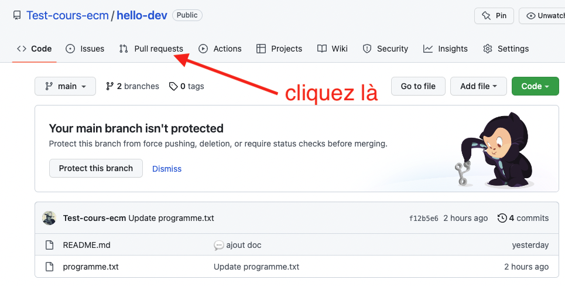
- ce qu'on veut :
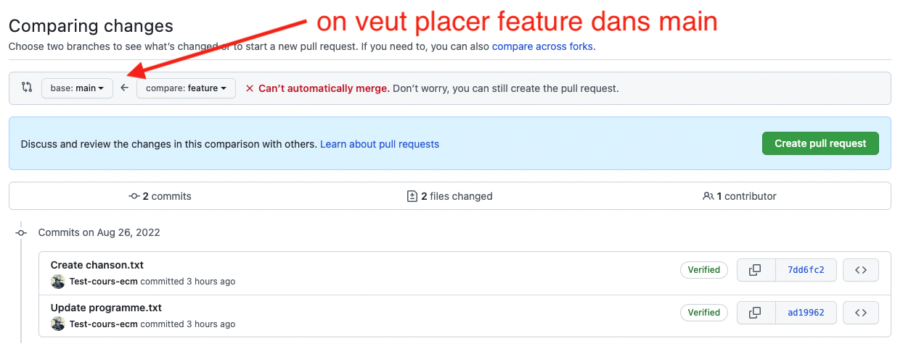
- ce n'est pas possible de faire ça automatiquement car il y a des mélanges de lignes :
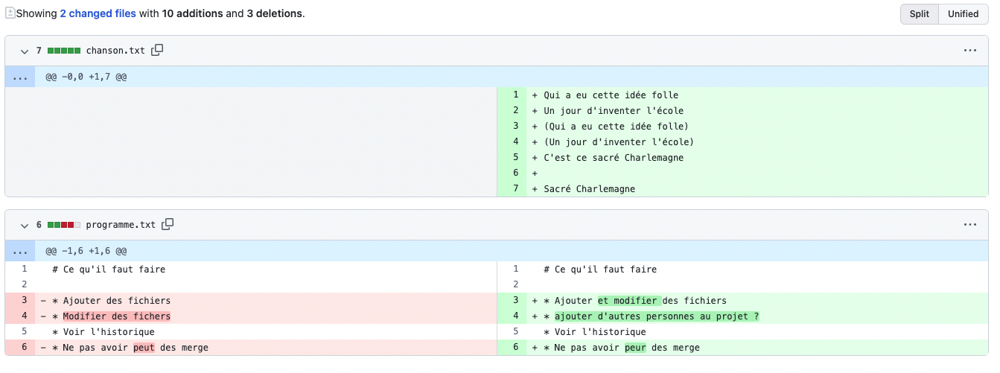
L'ajout de fichier s'est passé sans problème en revanche, git le fait tout seul. - On clique sur
create pull requestpour créer la requête :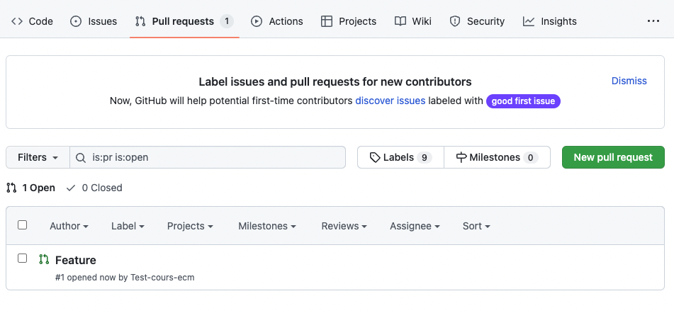
- En cliquant sur la requête, on voit qu'elle ne peut être résolue automatiquement :
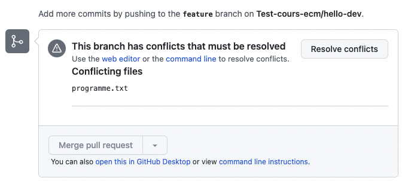
- Qui sont dans le fichier
programme.txt: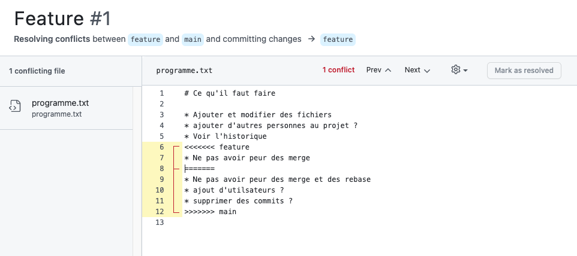
- Chaque conflit (il peut y en avoir plusieurs par fichier) est toujours représenté comme ça :
<<<<<< [nom d'une branche ou d'un commit]
[contenu de la branche]
====== autre branche
[contenu de l'autre branche]
>>>>>> [nom de l'autre branche ou de l'autre commit]Résoudre un confit consiste à choisir une branche ou à faire un mélange des branches pour arriver à un texte sans les <<<<<<, >>>>>> et =====. Puis cliquez sur mark as resolved. Pour notre problème :
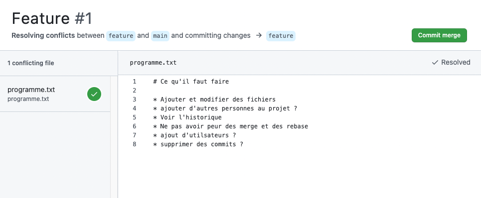
Une fois la fusion exécutée, notre graphe de dépendance est :
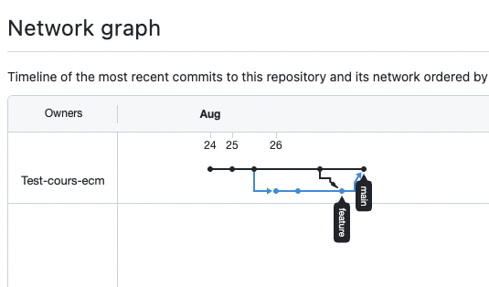
On peut alors supprimer la branche feature qui ne nous est plus d'aucune utilisée. On ne peut donc plus faire de commits sur cette branche, mais son existence est conservée dans l'historique :
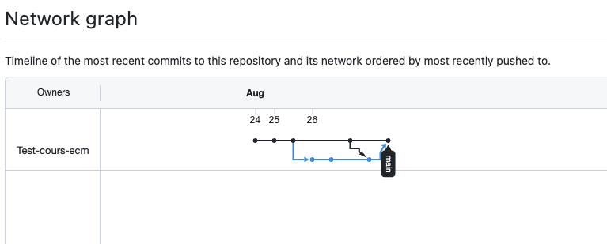
Rebase
Pour éviter des fusions de branches inutiles et conserver un historique aussi linéaire que possible, à la place de fusionner un pull request, vous pouvez effectuer un rebase.
Pour que cela soit possible, il faut que vous modifiez les préférences de votre projet :

Puis scrollez jusqu'à la partie sur les pull request pour cocher les diverses options disponibles :

TBD faire un modification (demander à un élève de le faire et de prendre n screen de la modif effectuée)
Si vous cliquez sur le triangle à droite du bouton vous verrez le pop-up :
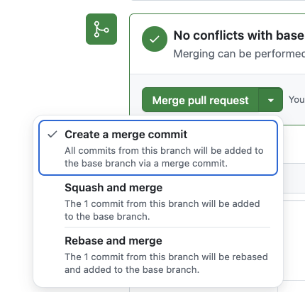
Choisissez rebase :
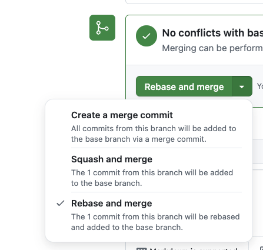
Puis appliquez la pull request. Si vous retournez dans la vision des commits et des branches, vous verrez que votre pull request a été ajouté linéairement.